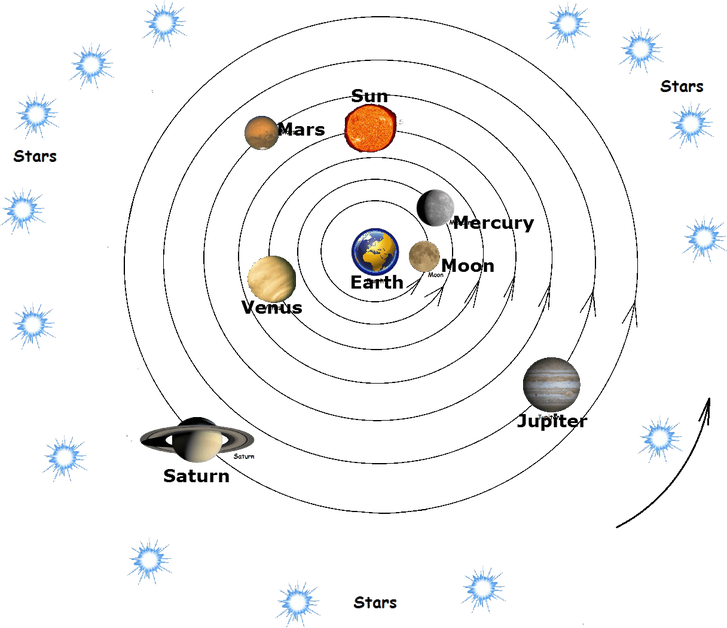
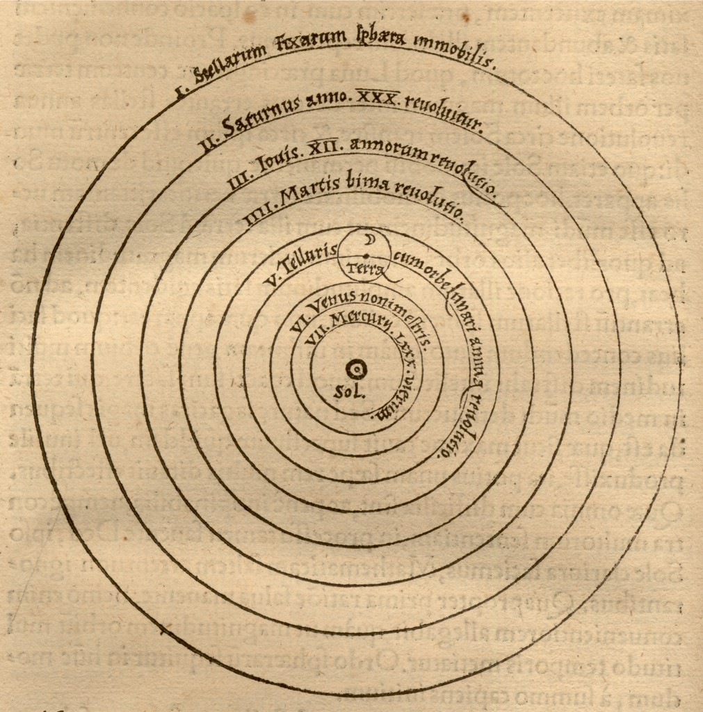
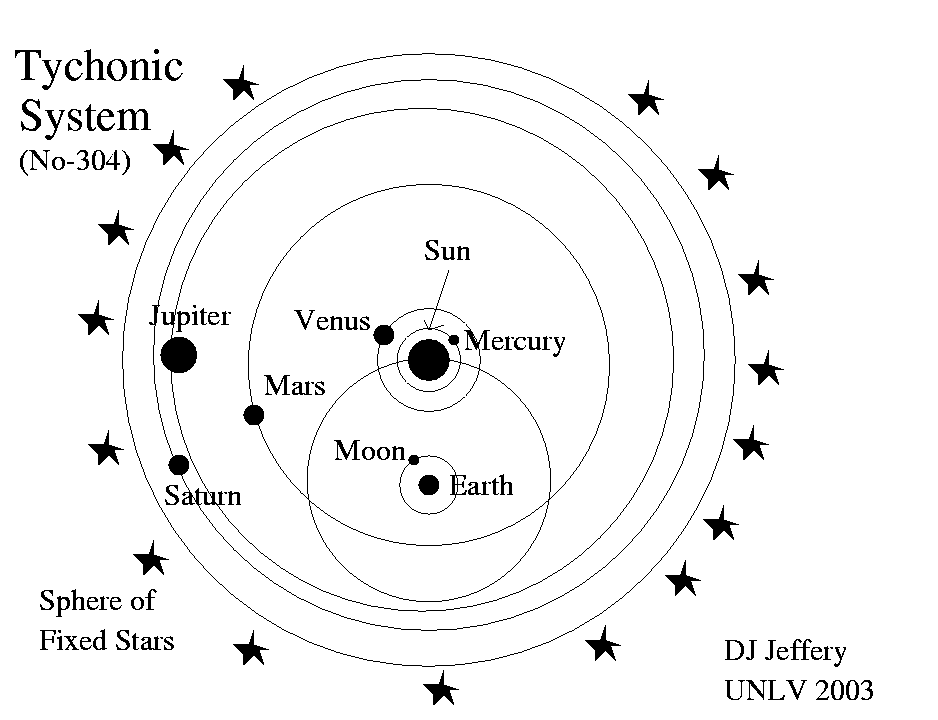

Copernican, Ptolemaic, and Tychonic Universe Models
Ptolemy's Geocentric Model
Copernicus's Heliocentric Model
Brahe's Tychonic System
At the present time, our Solar System consists of eight planets which are Mercury, Venus, Earth, Mars, Jupiter, Saturn, Uranus, and Neptune. All of these planets revolve a huge star called the Sun. With that, there are other celestial bodies in the Solar System such as moons that revolve around other celestial bodies. In the past, the astronomical systems of three notable persons were prominent around the 17th century. They were: Claudius Ptolemy, who developed the mathematics for a Geocentric planetary model where the Earth is the center of the Solar System, Nicolaus Copernicus, who is responsible for the Heliocentric planetary model where the Sun is the center of the Solar System, and Tycho Brahe, a person who understood the importance of advancing the observational techniques behind astronomy and was able to hypothesize a universe that was part Ptolemaic and part Copernican. The Ptolemaic model known as the Geocentric model was created by an Egyptian stargazer Claudius Ptolemy. It came from the Greek words geo significance Earth and driven importance place. This model makes sense of that the Earth is the focal point of the universe and all the other things rotates around it. Every planet moves in a roundabout way called epicycle which moves around a bigger roundabout way called deferents. The moon rotates around the Earth followed by different planets. As the stars move upward during the evening, the picture of a circle is inevitable. In light of the possibility that the stars were on a huge circle, Ptolemy put the earth squarely in the center of it, held set up by all that air out there. We don't feel the earth move and there's nothing stiller to find we would say than the actual ground. Along these lines, Ptolemy felt that each of the stars move around the earth each and every day, and the appropriate movement of the sun, moon, and planets was added to that normal, first movement of the whole sky. This is otherwise called the Heliocentric model created by a Polish mathematician Nicolaus Copernicus. It came from the Greek words Helios significance sun and driven importance place. This model makes sense of that the focal point of the universe is the Sun and that most of the planets spin around it. Likewise, the epicycle moves in a curved movement not round. The moon spins around both the Earth and the Sun while Earth rotates around the Sun. Nicolaus Copernicus is credited with getting the earth rolling, which he did, and with putting the sun at the focal point of the planetary framework, which he verged on doing. He composed of the sun: "In the focal point of all rests the sun. For who might put this light in an exceptionally wonderful sanctuary in another or preferable spot over this, from which it can enlighten everything simultaneously?… And so the sun, as though laying on a royal privileged position, administers the group of stars which wheel around." Since this framework is recognizable, I don't believe there's a lot to say about it, but to bring up how it represents the noticed loopings of the planets. This model was created by a Danish stargazer Tycho Brahe. It was the blend of Ptolemaic and Copernican models. This makes sense of that the planets of the Solar System spin around the Sun yet the Earth is the focal point of the universe. The Sun, because of its gigantic size, draws in the leftover planets and hauls them along its upheaval around the Earth - like metals drawn to a magnet! Basically, the Sun rotates around the Earth and the planets spin around the Sun. In 1600, Kepler had the amazing chance to work with the Holy Roman Emperor's regal space expert, the Dane Tycho Brahe. Prior, from his observatory Uraniborg on the island of Hven, Brahe had set up a logical research facility, with various representatives to support the creation of perceptions, arranging information, and working out planetary positions. His devotion to mentioning the most ideal observable facts to drive stargazing forward implied that his unaided eye information were exceptionally exact, to inside an arcminute or two. An arcminute is a 60th of a degree, similarly as the more natural time minutes are sixtieths of 60 minutes. In making his arrangement of nature, Tycho consolidated parts of both Ptolemy and Copernicus' frameworks. The earth lay at the middle, fixed, weighty, and unmoving. Around it turned the sun, stars, moon, and planets consistently, similarly concerning Ptolemy. Yet, Brahe had different planets circumvent the sun, which itself circumvented the earth. The consolidated movement of the sun and the planets around the sun dealt with the circling movement.